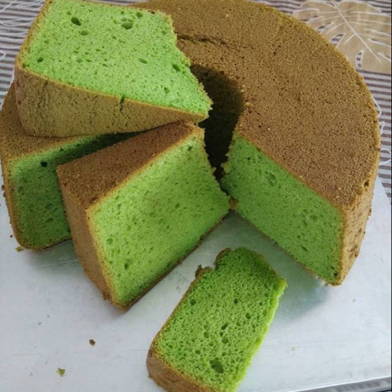

Kue Bolu Sifon Pandan

Bolu pandan adalah kue bolu yang berasal dari tanah Melayu (Singapura, Indonesia, Malaysia) yang diberi rasa dengan perasan daun Pandanus amaryllifolius. Makanan ini terkenal di Indonesia, Malaysia, Filipina, Singapura, Vietnam, Laos, Thailand, Hong Kong dan China. Kue Bolu Sifon Pandan di Toko Kue Pelangi bisa di dapatkan dengan harga Rp80.000-100.000 sesuai dengan ukuran yang di beli atau di pesan. Untuk informasi lebih lanjut bisa menghubungi kami melalui sosial media yang ada pada menu kontak kami.